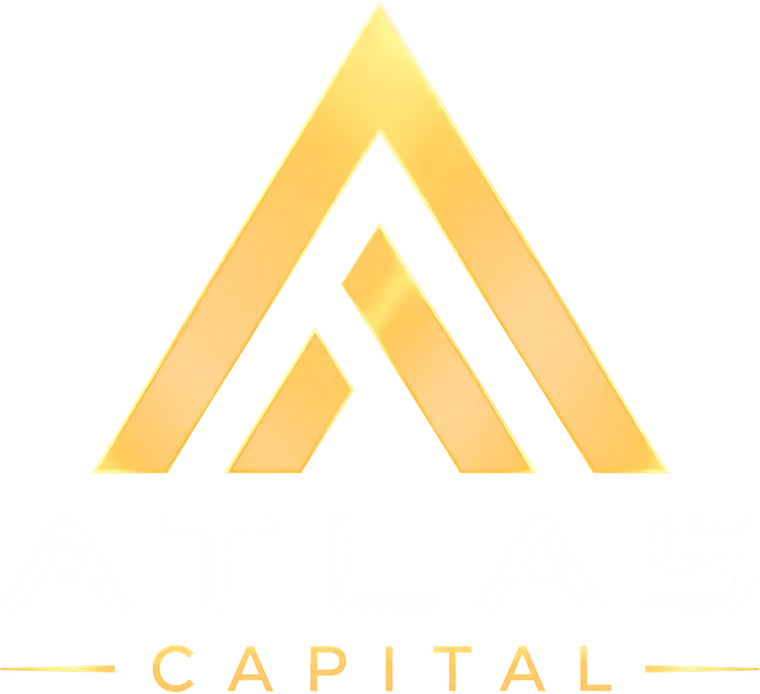

Alles wat erin zit, in de vorm waarin het hoort: een lijst, rustig, zonder ruis.Everything in it, in the form it belongs in: a list, calm, no noise.
Open de DiscordOpen the DiscordProductieProduction
- Community
- Atlas Capital
- Tagline
- Proces. Discipline. Uitvoering.Process. Discipline. Execution.
- TaalLanguage
- Nederlands en EngelsDutch and English
- LocatieLocation
- Discordde server is de plekthe server is the place
HoofdrolStarring
- OprichterFounder
- 10+ jaar actief in trading10+ years active in tradingwinst, verlies, fouten, groei, lessenwins, losses, mistakes, growth, lessons
Atlas Capital heb ik gebouwd om die ervaring te delen, traders samen te brengen en te laten zien hoe ik de markten dagelijks benader. Geen snelle-rijk-verhalen, maar echte setups, educatie en een community die samen beter wil worden.I built Atlas Capital to share that experience, bring traders together, and show how I approach the markets on a daily basis. No get-rich-quick promises, just real setups, education, and a community focused on improving together.
De oprichterThe founder
Educatie · 10 onderwerpenEducation · 10 topics
- OnderwerpenTopics
- DeviatieDeviation
- SMT
- FVG
- IFVG
- Orderblocks
- Fibonacci
- Sessie-liquiditeitSession liquidity
- LiquiditeitLiquidity
- RisicobeheerRisk management
- TradingpsychologieTrading psychology
De educatie staat in de serverThe education lives in the server
Kom erbij op DiscordJoin in on DiscordLocaties · 15 kanalenLocations · 15 channels
- Thuis · nu gratisHome · free right now
- #nq-chart-ideeën
- #es-chart-ideeën
- #bitcoin
- #altcoins
- #markt
- #vragen
- #algemeen
- #atlas-op-socials
- #ondersteuning
- Premium · opent laterPremium · opens later
- #trade-setups
- #marktupdates
- #indicatoren
- #sessie-opnames
- #chart-ideeën
- #premium-chat
MarktenMarkets
- IndicesIndices
- NasdaqNQ
- S&P 500ES
- Dow Jones
- MetalenMetals
- GoudGoldXAUUSD
- ZilverSilver
- EnergieEnergy
- OlieOil
- Crypto
- Bitcoin
- Altcoins
Live
- Live trading
- De oprichter handelt live in de serverThe founder trades live in the servertijden worden daar aangekondigdtimes are announced there
Zit erbij als het live gaatSit in when it goes live
Naar de serverTo the serverDe leerstofThe material
Dit is wat je in Premium leert lezen. Geen uitslagen, geen instapmomenten — de onderdelen zelf, aangetekend op de chart.This is what you learn to read in Premium. No outcomes, no entries — the elements themselves, marked up on the chart.


TrackrecordTrack record
De uitslagen van de oprichter zelf. Zes prop-firms, 2023 tot 2026 — elk certificaat draagt een verificatiecode.The founder's own results. Six prop firms, 2023 to 2026 — every certificate carries a verification code.
- Funded Trading Plus
- Funded trading accountFunded trading account10 juli 202310 July 2023
- FTMO
- Challenge en VerificationChallenge and VerificationRewards $3,381.37 · $2,498.72
- FundingPips
- Negen fase-certificatenNine phase certificates$3,844.80 · $4,820.80 · $6,209.60 · $1,244.80
- Topstep
- Trading Combine, 23 keerTrading Combine, 23 times14 uitbetalingen · dec 2025 – mei 202614 payouts · Dec 2025 – May 2026
- FundedNext Futures
- Champion Trader · Rising Traderaugustus 2026August 2026
- Lucid Trading
- Funded accountsUitbetalingenPayouts $5,181 · $2,523
Tik op een certificaat voor het origineelTap a certificate for the original
Dit zijn de resultaten van één handelaar: de oprichter. Ze zeggen niets over wat een lid van Atlas Capital gaat verdienen.These are one trader's results: the founder's. They say nothing about what a member of Atlas Capital will earn.
Uitbetalingen van prop-firms zijn bruto. De inschrijfkosten van de evaluaties die aan deze rekeningen voorafgingen zijn er niet van afgetrokken, en de bedragen hierboven zijn niet opgeteld tot een totaal.Prop-firm payouts are gross. The entry fees for the evaluations behind these accounts are not netted off, and the amounts above are not summed into a total.
Resultaten uit het verleden bieden geen garantie voor de toekomst.Past results are no guarantee of future results.
ToegangAccess
- NuNow
- GratisFreenegen open kanalen en de educatienine open channels and the education
- Later
- Premium opentPremium opensprijs en datum worden in de server aangekondigdprice and date are announced in the server
EindeThe End
Behalve in de server. Daar begint het.Except in the server. That is where it starts.
Open de DiscordOpen the Discord